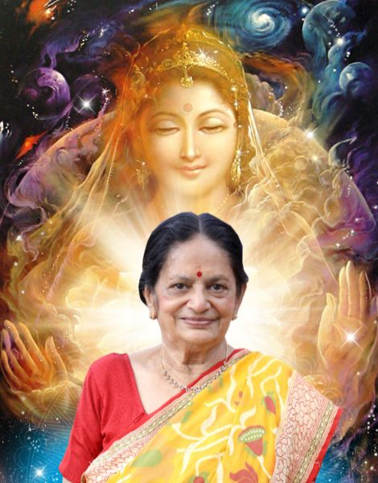
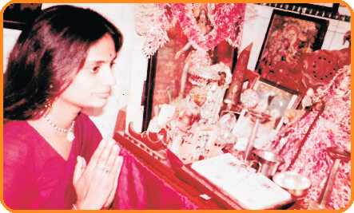
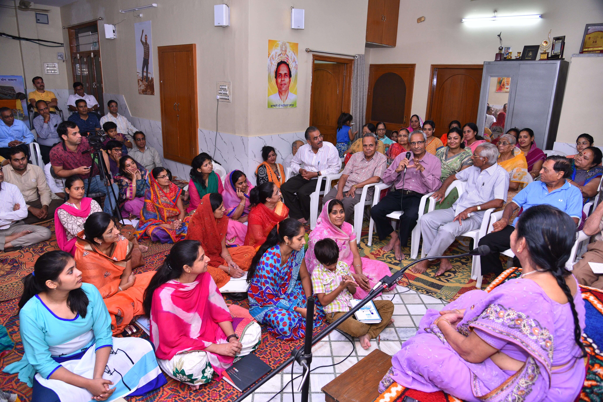

A life of devotion, stewardship and compassionate guidance · 1942–2021
She received Bhaiyaji’s wisdom through a lifetime of disciplined Sadhna, preserved its spiritual purity, and carried it into education, service and the everyday lives of seekers.
Born28 September 1942 Jodhpur
Spiritual pathUnder Bhaiyaji’s guidance from 1964
StewardshipCarried the Mission from 2003 to 2021
The Courage of a Steady Flame
Her strength was quiet—not because the path was easy, but because her resolve was complete
Maa Basanti’s life cannot be understood only through the responsibilities she held. Beneath them was a deeply personal choice: to place comfort, certainty and self-interest behind her, and to give an entire life to Sadhna, knowledge and the care of others.

Jodhpur · 1964
A familiar relation became her spiritual guide
Educated, capable and raised in the respected family of Advocate Shri Harkalalji Manihar and Smt. Sirekanwarji, Basanti Manihar could have followed a comfortable and conventional life. Then her maternal cousin, Shri Nandkishore Sharda, opened before her a far more demanding possibility.
She did not accept the path casually. There was reflection, testing and the inner struggle that accompanies any decision which changes the direction of a life. When she finally accepted Bhaiyaji’s guidance, it was not an act of sentiment—it was a conscious surrender.
The choice she lived
To receive spiritual knowledge was also to accept its discipline—and one day, the responsibility of protecting it for others.
Years unseen by the world
Devotion was shaped in ordinary rooms and extraordinary perseverance
Renouncing material comfort, she devoted herself to Jagatjanani Maa. For years, Maa Basanti, Bhaiyaji and later Madhu Maa practised at Maniharon Ki Haveli. Their spiritual work was intimate and rigorous—far from the public identity the Mission would eventually acquire.
In 1995, their Sadhna moved to the newly completed Manidweep. Within those walls, knowledge was not merely discussed; it was tested in conduct, patience and service. Maa Basanti became the steady presence who could hold profound spiritual insight together with the smallest practical responsibility.

A younger Maa Basanti in prayer—devotion before public responsibility.
A shared life of purpose
The Mission was built through companionship, trust and daily work
As Founder of the Swami Vivekanand Students’ Welfare Charitable Trust in 1996, Maa Basanti helped translate spiritual conviction into educational opportunity. Beside Bhaiyaji and Madhu Maa, she worked not for recognition but for the student whose circumstances threatened to close the door to learning.
The three lives were joined by more than institutional roles. They shared Sadhna, responsibility and a belief that divine knowledge must become compassion in action.
Bhaiyaji, Madhu Maa and Maa Basanti during the Mission’s formative years.

Knowledge made intimate: a Sunday gathering where questions of everyday life met spiritual guidance.
The tenderness within stewardship
She did not merely preserve a teaching; she sat beside people as they learned to live it
In Sunday morning sessions, she nurtured confidence, devotion, positive thinking and moral strength among young women. In evening gatherings, she helped householders bring Buddhi-Vivek Yog Sadhna into family tensions, material responsibilities and the quiet struggles rarely visible to others.
Maa Basanti left her mortal form on 7 May 2021. Yet the people she formed, the literature she preserved and the institutions she steadied continue to reveal what her quiet resolve achieved.
Her devotion was not measured by withdrawal from the world, but by how faithfully she remained present for it.
Her Enduring Contribution
Wisdom preserved, practised and shared
01 · Preservation
The written legacy
She brought Bhaiyaji’s life, philosophy and divine knowledge to readers through carefully published memoirs and spiritual works.
02 · Formation
Values with education
Her Sunday sessions cultivated confidence, character, devotion and responsibility alongside academic aspiration.
03 · Guidance
Spirituality in daily life
She helped seekers harmonise family responsibilities, material life and the inward journey toward clarity and peace.